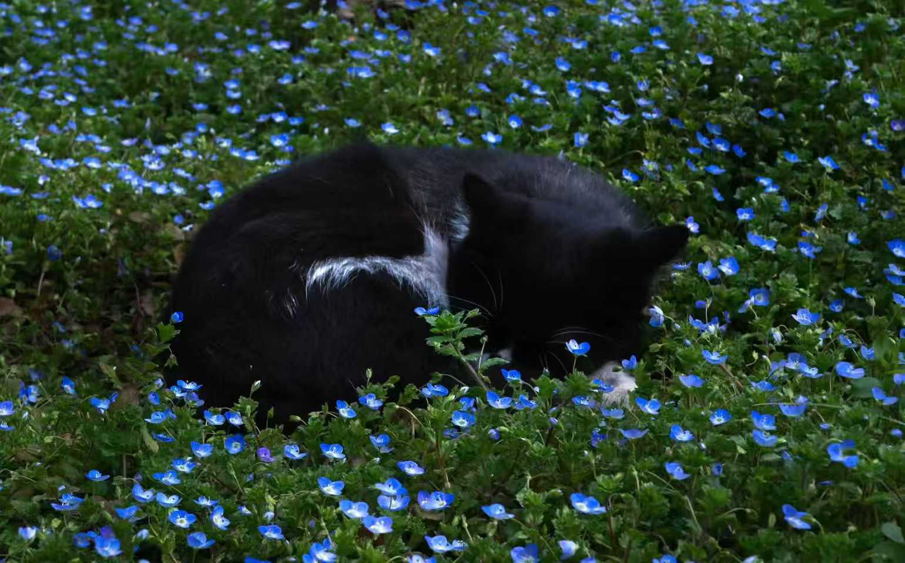

大家好，我是小黑，一只热爱探索、享受生活的黑色猫咪。 我擅长观察环境、陪伴人类以及制造快乐。 凭借安静优雅的气质和温柔治愈的性格，成为家庭中不可缺少的一员。

在猫妈妈的指导下学习基础生存技能，包括：
成功完成从幼猫到独立猫咪的成长。
开始探索周围环境：
培养了优秀的观察能力与探索精神。
学习与人类及其他动物相处：
成为优秀的家庭成员。
一只外表沉稳、内心温柔的猫咪。 具备优秀的观察能力、适应能力和陪伴能力。善于用安静的方式表达情感，是家庭生活中可靠的伙伴。